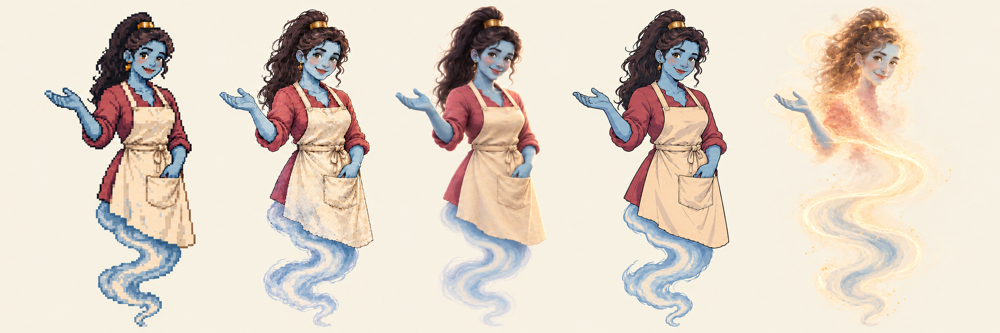
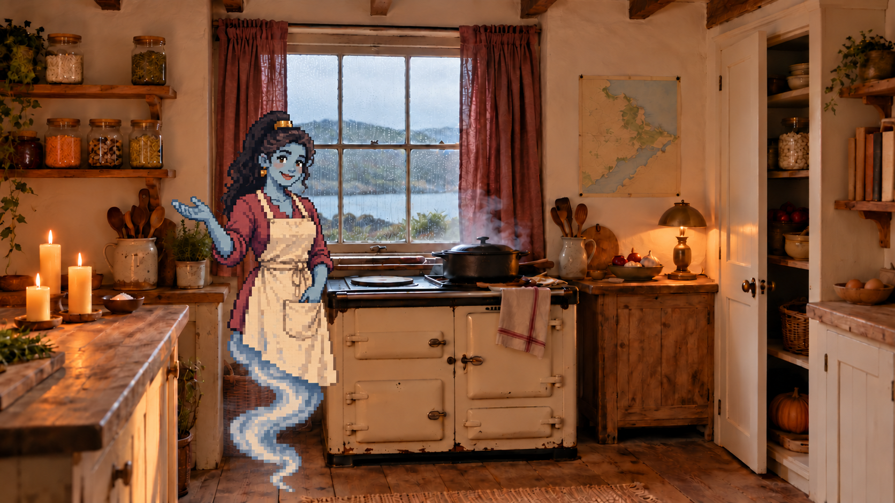
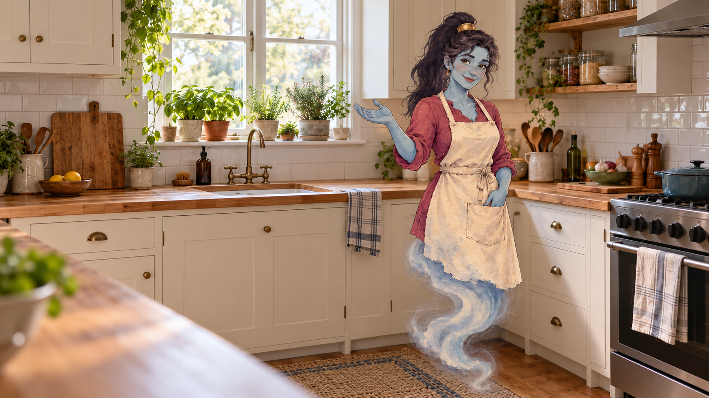

WhiskedAway · Gemma · Stage1
Finding Gemma
One warm, practical kitchen genie in five styles. Blue skin, a dark high ponytail, berry sleeves, linen and a welcoming hand.

Left to right: A Pixel · B Storybook · C Stylised3D · D Cel animation · E Steam presence.
The choice is open. B and C were shortlisted for the daylight co-host tests below. Stage2 begins after Nicole chooses a direction; a simpler chat treatment can share the same character design.
Beside the Cuddlecore range
Switch styles to compare Gemma in the same room and welcoming pose.

A · Pixel art — Crisp sprite shapes and the feel of a90s adventure game.
Open full image
In a daylight home kitchen
The same photographic kitchen mockup, scale and placement for the two shortlisted styles. Nicole’s working space is left open.

B · Storybook. Continuity with the painted Inn-in-whisk world.
C · Stylised3D. Room light and spatial presence.